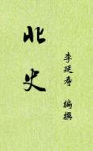

| 史籍 > |
| 北史 |
| 唐·李延寿 编撰 |
|
《北史》，纪传体断代史，本纪12卷，列传88卷，100卷。唐代李延寿编。记述北朝从公元386年到618年，魏、齐（包括东魏）、周（包括西魏）、隋四个封建政权共二百三十三年的历史。主要在魏、齐、周、隋四书基础上删订改编而成，但也参考了当时所见各种杂史，增补了不少材料。 《北史》虽有内容偶呈芜杂之弊，又像各种大家族谱，但毕竟体例完整、材料充实、文字简炼，在后代颇受重视。魏、齐、周三书唐以后皆残缺不完，后人又多从《北史》加以补足。作为研究北朝历史的资料，《北史》与魏、齐、周、隋四书有互相补充的作用。 （2020-4-22，重整理-3） |
 |